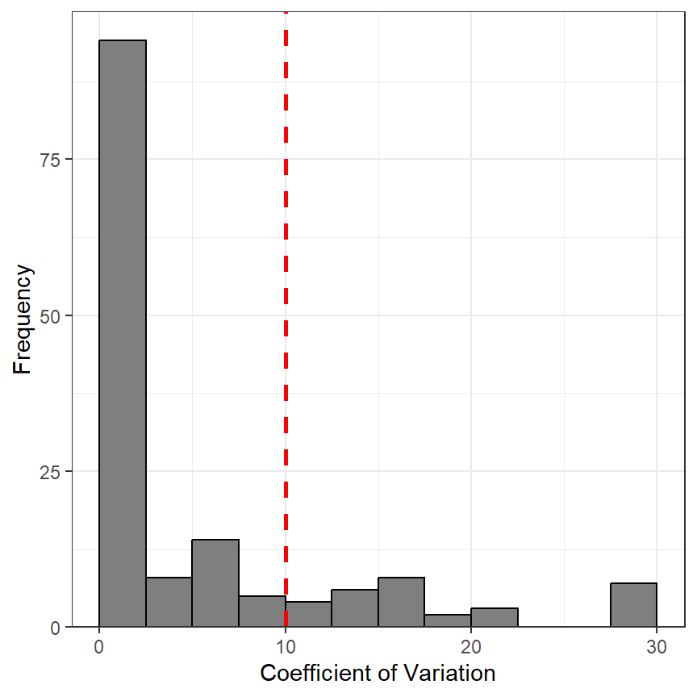

library(FSA) # for WhitefishLC, agePrecision(), headtail()
library(dplyr) # for arrange(), filter()
library(ggplot2)
theme_set(theme_bw())
Note
The following packages are loaded for use below. I also set the default ggplot theme to theme_bw() for a classic “black-and-white” plot (rather than the default plot with a gray background).
An FSA user asked if there was a way to work with the age comparison results for individual fish. In particular, this user wanted to identify each fish for which the individual CV values from comparing two independent age estimates was greater than 10. This is fairly easy to do with an understanding of the results returned from agePrecision(). Below is an example using the WhitefishLC data found in the FSA package.1
1 These data are automatically loaded with library(FSA).
These data contain, among other things, ages assigned by two readers examining otoliths in (otolith1 and otolith2).2
2 headtail() from FSA shows the first and last three rows of a data frame. It is used here primarily to save space.
headtail(WhitefishLC)#R| fishID tl scale1 scale2 scaleC finray1 finray2 finrayC otolith1 otolith2
#R| 1 1 345 3 3 3 3 3 3 3 3
#R| 2 2 334 4 3 4 3 3 3 3 3
#R| 3 3 348 7 5 6 3 3 3 3 3
#R| 149 214 599 14 16 15 14 14 14 16 16
#R| 150 216 636 8 10 9 10 8 10 15 15
#R| 151 218 551 5 7 6 6 9 8 13 13
#R| otolithC
#R| 1 3
#R| 2 3
#R| 3 3
#R| 149 16
#R| 150 15
#R| 151 13A variety of computations on these paired age estimates are performed with agePrecision().3 The structure of the saved object shows several items returned in a list.
3 See the agePrecision() documentation for full details.
ap1 <- agePrecision(~otolith1+otolith2,data=WhitefishLC)
str(ap1)#R| List of 14
#R| $ detail :'data.frame': 151 obs. of 12 variables:
#R| ..$ otolith1: int [1:151] 3 3 3 3 3 6 9 11 3 1 ...
#R| ..$ otolith2: int [1:151] 3 3 3 3 3 5 10 12 4 1 ...
#R| ..$ mean : num [1:151] 3 3 3 3 3 5.5 9.5 11.5 3.5 1 ...
#R| ..$ median : num [1:151] 3 3 3 3 3 5.5 9.5 11.5 3.5 1 ...
#R| ..$ mode : int [1:151] 3 3 3 3 3 NA NA NA NA 1 ...
#R| ..$ SD : num [1:151] 0 0 0 0 0 ...
#R| ..$ CV : num [1:151] 0 0 0 0 0 ...
#R| ..$ CV2 : num [1:151] 0 0 0 0 0 ...
#R| ..$ AD : num [1:151] 0 0 0 0 0 0.5 0.5 0.5 0.5 0 ...
#R| ..$ PE : num [1:151] 0 0 0 0 0 ...
#R| ..$ PE2 : num [1:151] 0 0 0 0 0 ...
#R| ..$ D : num [1:151] 0 0 0 0 0 ...
#R| $ rawdiff : 'table' int [1:5(1d)] 3 27 94 21 6
#R| ..- attr(*, "dimnames")=List of 1
#R| .. ..$ : chr [1:5] "-2" "-1" "0" "1" ...
#R| $ absdiff : 'table' int [1:3(1d)] 94 48 9
#R| ..- attr(*, "dimnames")=List of 1
#R| .. ..$ : chr [1:3] "0" "1" "2"
#R| $ ASD : num 0.309
#R| $ ACV : num 4.72
#R| $ ACV2 : num 4.72
#R| $ AAD : num 0.219
#R| $ APE : num 3.34
#R| $ APE2 : num 3.34
#R| $ AD : num 3.34
#R| $ PercAgree: num 62.3
#R| $ R : int 2
#R| $ n : int 151
#R| $ validn : int 151
#R| - attr(*, "class")= chr "agePrec"For this problem, the user wants to focus on the intermediate calculations for each individual fish, which, according to the the agePrecision() documentation, is in detail object.
headtail(ap1$detail)#R| otolith1 otolith2 mean median mode SD CV CV2 AD PE PE2 D
#R| 1 3 3 3 3 3 0 0 0 0 0 0 0
#R| 2 3 3 3 3 3 0 0 0 0 0 0 0
#R| 3 3 3 3 3 3 0 0 0 0 0 0 0
#R| 149 16 16 16 16 16 0 0 0 0 0 0 0
#R| 150 15 15 15 15 15 0 0 0 0 0 0 0
#R| 151 13 13 13 13 13 0 0 0 0 0 0 0The detail object is a data frame that can then be treated like any other data frame. For example, it can be sorted by ascending order of the CV value or filtered to find all fish that had a CV greater than 10.4
4 Here I usearrange() from dplyr to sort and filter() from dplyr to filter.
## Sort by CV
tmp <- ap1$detail |>
arrange(CV)
headtail(tmp)#R| otolith1 otolith2 mean median mode SD CV CV2 AD PE PE2
#R| 1 3 3 3.0 3.0 3 0.0000000 0.00000 0.00000 0.0 0 0
#R| 2 3 3 3.0 3.0 3 0.0000000 0.00000 0.00000 0.0 0 0
#R| 3 3 3 3.0 3.0 3 0.0000000 0.00000 0.00000 0.0 0 0
#R| 149 3 2 2.5 2.5 NA 0.7071068 28.28427 28.28427 0.5 20 20
#R| 150 3 2 2.5 2.5 NA 0.7071068 28.28427 28.28427 0.5 20 20
#R| 151 6 4 5.0 5.0 NA 1.4142136 28.28427 28.28427 1.0 20 20
#R| D
#R| 1 0
#R| 2 0
#R| 3 0
#R| 149 20
#R| 150 20
#R| 151 20## Filter by CV
tmp2 <- ap1$detail |>
filter(CV>10)
headtail(tmp2)#R| otolith1 otolith2 mean median mode SD CV CV2 AD PE
#R| 1 6 5 5.5 5.5 NA 0.7071068 12.85649 12.85649 0.5 9.090909
#R| 2 3 4 3.5 3.5 NA 0.7071068 20.20305 20.20305 0.5 14.285714
#R| 3 2 3 2.5 2.5 NA 0.7071068 28.28427 28.28427 0.5 20.000000
#R| 28 9 11 10.0 10.0 NA 1.4142136 14.14214 14.14214 1.0 10.000000
#R| 29 9 7 8.0 8.0 NA 1.4142136 17.67767 17.67767 1.0 12.500000
#R| 30 5 4 4.5 4.5 NA 0.7071068 15.71348 15.71348 0.5 11.111111
#R| PE2 D
#R| 1 9.090909 9.090909
#R| 2 14.285714 14.285714
#R| 3 20.000000 20.000000
#R| 28 10.000000 10.000000
#R| 29 12.500000 12.500000
#R| 30 11.111111 11.111111The distribution of CV values can also be examined (Figure 1).
cvdist <- ggplot(data=ap1$detail,aes(x=CV)) +
geom_histogram(binwidth=2.5,boundary=0,color="black",fill="gray50") +
scale_x_continuous(name="Coefficient of Variation") +
scale_y_continuous(name="Frequency",expand=expansion(mult=c(0,0.05))) +
geom_vline(xintercept=10,color="red",linewidth=1,linetype="dashed")
cvdist
Reuse
Citation
BibTeX citation:
@misc{h.ogle2015,
author = {Derek H. Ogle},
title = {Age {Comparison} {Results} for {Individual} {Fish}},
date = {2015-09-05},
url = {https://fishr-core-team.github.io/fishR//blog/posts/2015-9-5_Age_Comparison_Results},
langid = {en}
}
For attribution, please cite this work as:
Derek H. Ogle. 2015, September 5. Age
Comparison Results for Individual Fish.